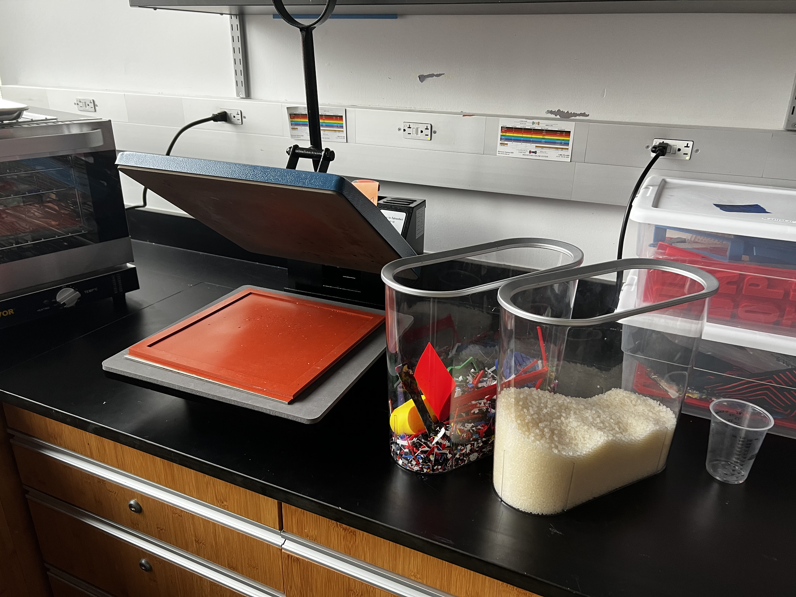
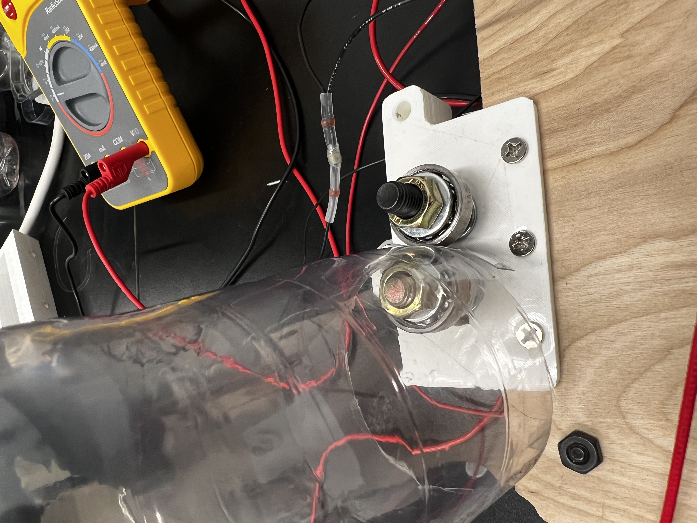
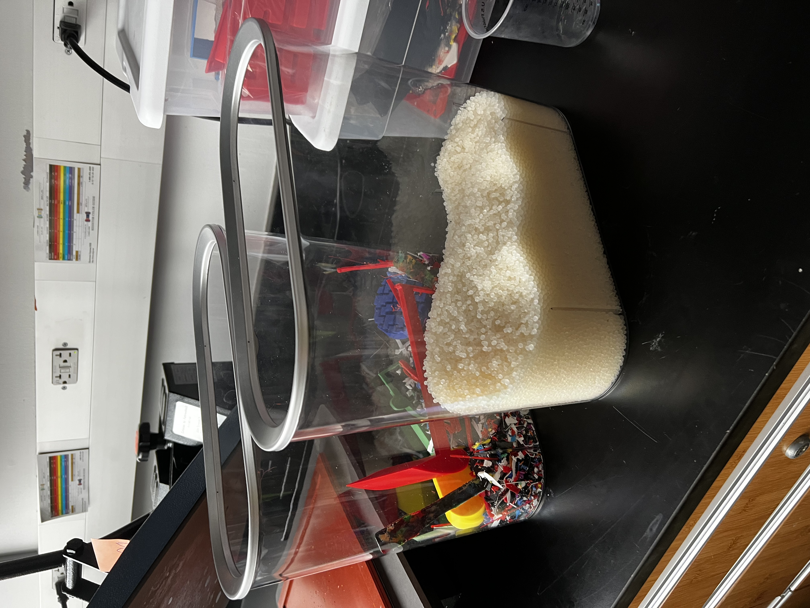
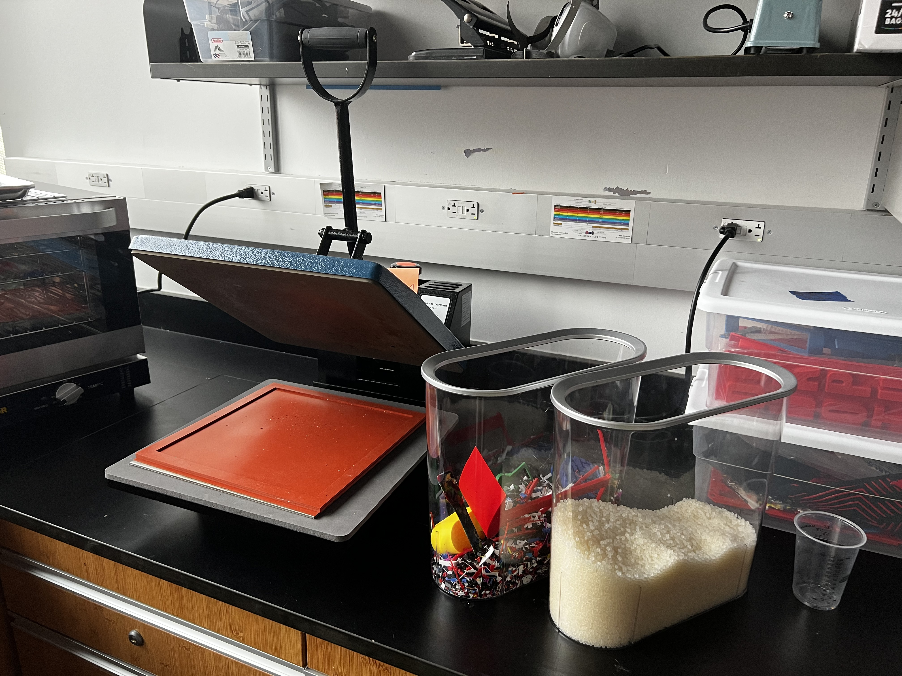
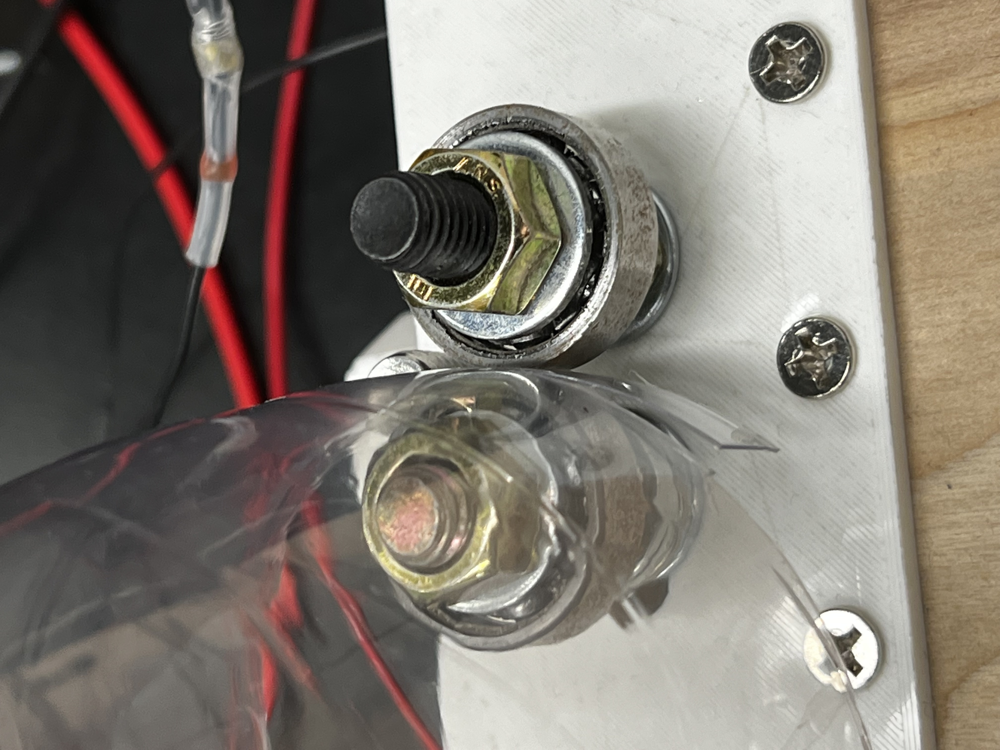
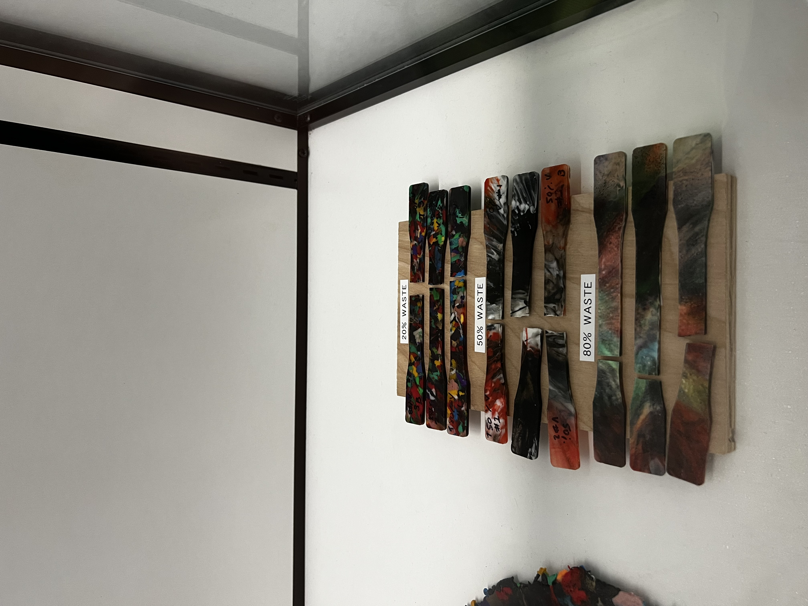
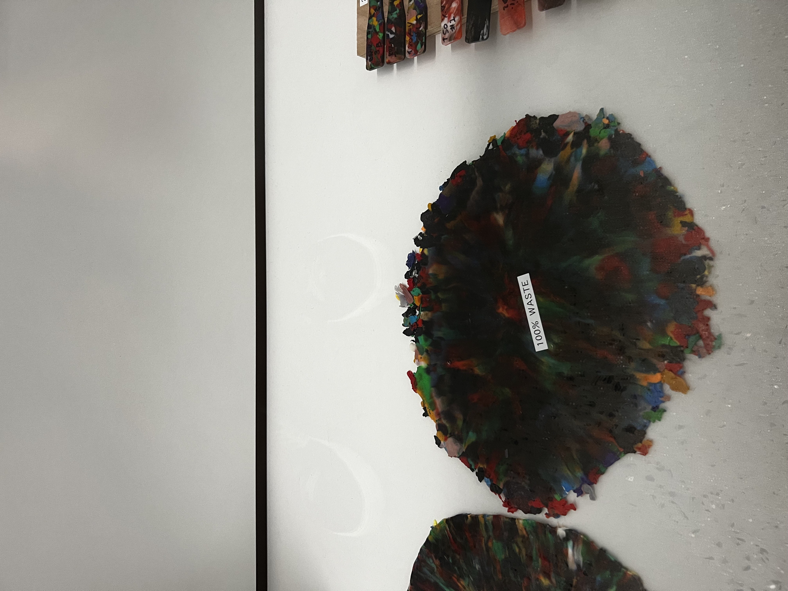
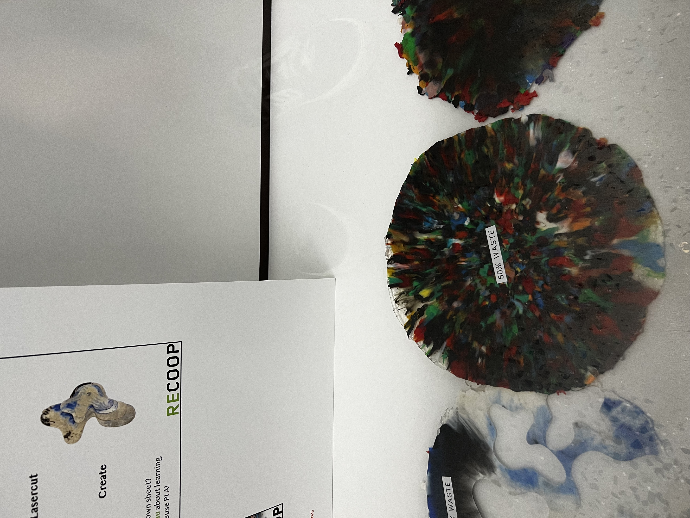

Why Recycling is Broken at Scale
The recycling system most people participate in — rinsing containers, placing them in a bin, watching a truck collect them — is largely a logistics and commodities business. Collected plastic is sorted, baled, and sold to processing facilities that melt and re-pelletize it for manufacturers. When commodity prices are low, or when contamination rates are high, the economics break down and collected plastic gets landfilled anyway.
Globally, less than 10% of all plastic ever produced has been recycled. Most of what people believe they are recycling is incinerated or buried. The gap between consumer intention and actual material recovery is enormous.
The contamination problem: Industrial recycling requires clean, sorted, single-resin streams. Mixed or contaminated plastic has little value and often ends up in landfill even after collection. A local system processing material from a known, controlled source can achieve much higher purity — and therefore higher recovery rates — than a municipal system handling mixed household waste.
Why distributed recycling is different: A distributed model targets the fraction that industrial systems cannot economically handle: small volumes of clean, sorted plastic at community or campus scale. Instead of shipping that material to a distant facility, it is processed locally into useful objects — furniture components, construction elements, tool handles, packaging — closing the loop within the same geography where the waste was generated.
Small Machines, Local Loops
The distributed recycling movement was catalyzed by the Precious Plastics project, which open-sourced a set of compact machines — shredder, extruder, injection molder, compression press — that can be built from off-the-shelf components for a few thousand dollars each. These machines are small enough to fit in a garage or workshop and can be operated by a small team without industrial training.
The underlying insight: the economics of recycling are scale-dependent. Industrial facilities need enormous throughput to be viable. But if the goal is local material recovery rather than global commodity production, the scale requirement drops dramatically. A campus, a neighborhood, or a small business generating consistent plastic waste can sustain a micro-recycling operation that produces useful objects rather than bales of commodity polymer.
ReCoop — The Cooper Union Project
Before founding Kiau Technologies, several of our team members built and operated a local-scale plastic recycling system at The Cooper Union in New York City. The project — called ReCoop — was one of the first implementations of distributed recycling on a university campus in the US.
The system collected HDPE and PP plastic waste from campus sources, shredded it on-site, and processed it through a custom-built extruder and injection molder to produce test specimens and small useful objects. The project documented material properties, process parameters, and yield rates across multiple plastic types and recycling cycles.






What was tested: The team produced standard ASTM dogbone tensile specimens from 100% recycled material and from 50/50 blends of virgin and recycled resin. Mechanical testing compared yield strength, elongation, and failure mode across multiple recycling generations.



While the project was not commercially deployed, it produced a detailed technical record of what local recycling can and cannot achieve at campus scale — and surfaced the real bottlenecks: collection consistency, contamination control, and the labor cost of sorting and preparation rather than the machinery itself.
How Local Recycling Works
A complete local-scale plastic recycling system involves four sequential steps. Each step has its own quality requirements — failures or contamination at any stage propagate through the rest of the process.
Each processing cycle causes some degree of polymer chain degradation. For most common plastics, properties remain acceptable through 3–5 cycles before the material is only suitable for low-structural applications like tiles or decorative panels. Blending recycled material with virgin resin extends useful life significantly.
Plastic waste is collected from a known, controlled source. Items are sorted by resin type and cleaned. This is the most labor-intensive step and the primary bottleneck in most local systems.
Clean, sorted plastic is fed into a shredder that reduces it to flakes or granules (typically 5–15mm). Consistent particle size improves melt uniformity in subsequent processing.
Shredded plastic is fed into an extruder, injection molder, or compression press. Heat brings the resin above its melt temperature; pressure forces it into a mold or through a die.
The formed part cools in the mold. Once solid, it is removed and put to use. Runners, sprues, and rejected parts go back into the shredder — a closed loop within the facility.
Which Plastics Work
Not all plastics are equally suitable for local small-scale recycling. The key variables are melting point, viscosity at processing temperature, and degradation rate. Thermosets cannot be remelted at all — only thermoplastics can be recycled this way.
Milk jugs, shampoo bottles, pipes, cutting boards. High carbon content, consistent density, low ash. Best char yield.
Yogurt containers, bottle caps, takeout containers. Widely available, burns cleanly.
Water bottles, food trays, fabric. Requires thorough drying before processing.
Foam cups, disposable cutlery, packaging. Releases fumes during processing — outdoor ventilation required.
Plastic bags, film wrap, squeeze bottles. Hard to shred consistently; tends to wrap around shredder blades.
Flexible pouches, multilayer films, composites. Cannot be recycled in a local system — mixed resins contaminate the melt.
What Comes Next
The ReCoop project demonstrated that local plastic recycling is technically feasible at campus scale. The open questions are organizational and economic: how do you sustain consistent collection, who covers operating costs, and what products have enough local demand to justify the process?
Kiau Technologies is actively exploring partnerships to bring this work to new contexts — particularly in communities where plastic waste is a pressing issue and access to industrial recycling infrastructure is limited.
ReCoop documentation: The full project documentation — machine specs, process parameters, test results, and lessons learned — is available at re.cooper.edu. Machine designs follow the Precious Plastics open-source hardware standard.
Whether you are a municipality, a university, a maker space, or a business interested in closing your plastic material loop — get in touch →